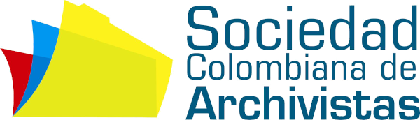

El patrimonio es el legado que recibimos del pasado, que vivimos en el presente y que transmitiremos a las generaciones futuras.
Fuente: UNESCO
Patrimonio cultural: se trata de aquellos lugares y objetos tangibles e intangibles que poseen valor cultural, histórico, estético, arqueológico, científico, etnológico o antropológico para determinados grupos o individuos.
Fuente: UNESCO
La preservación digital debe ofrecer que la «representación» de los objetos digitales corresponde en todo momento al del objeto original, cada vez que se solicite posteriormente.
Fuente: UNESCO
La preservación digital puede definirse como el conjunto de los procesos destinados a garantizar la continuidad de los elementos del patrimonio digital durante todo el tiempo que se consideren necesarios.
Fuente: UNESCO
La mayor amenaza para la continuidad digital es la desaparición de los medios de acceso.
Fuente: UNESCO
Vida útil de los soportes MAGNÉTICOS
Estas unidades incluyen desde Tape Drives, BETA, VHS hasta unidades de disquete y los LTO.
Fabricantes indican que la vida útil de estos medios es entre 5, 10 y 25 años
Vida útil de los soportes ÓPTICOS
Fabricantes indican que la vida útil de medios CD-R, DVD-R, y DVD+R es entre 100 y 200 años
CD-RW, DVD-RW, DVD+RW, y DVD-RAM de 25 años
Vida útil de los soportes en disco duro
Los discos mecánicos tienen una esperanza de duración entre 3 y 5 años
Los discos SSD tienen una esperanza de funcionamiento entre 50 y 100 años
dependiendo de los ciclos de grabado, tiempo de trabajo y tecnología utilizada.
Pérdidas masivas de información
https://www.businessinsider.fr/us/amazon-lost-data-2011-4?op=1
Eliminaciones masivas de contenidos
https://onezero.medium.com/when-the-web-loses-its-memory-1c0fc4375ba9
Errores en el manejo de información
https://medium.com/@nodegin/i-lose-all-my-data-by-using-digitalocean-spaces-247888cc05ae
Magister en Archivística Histórica y Memoria